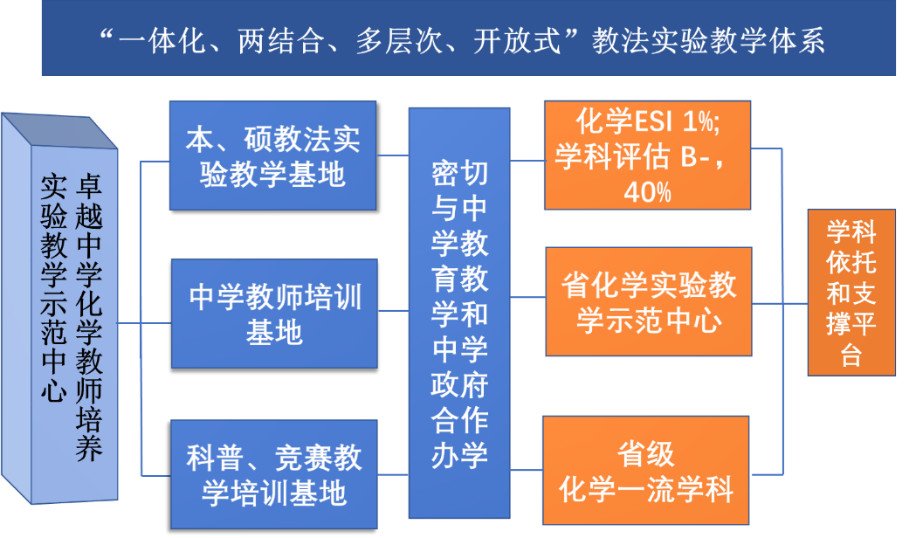
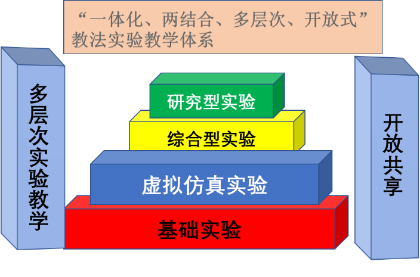
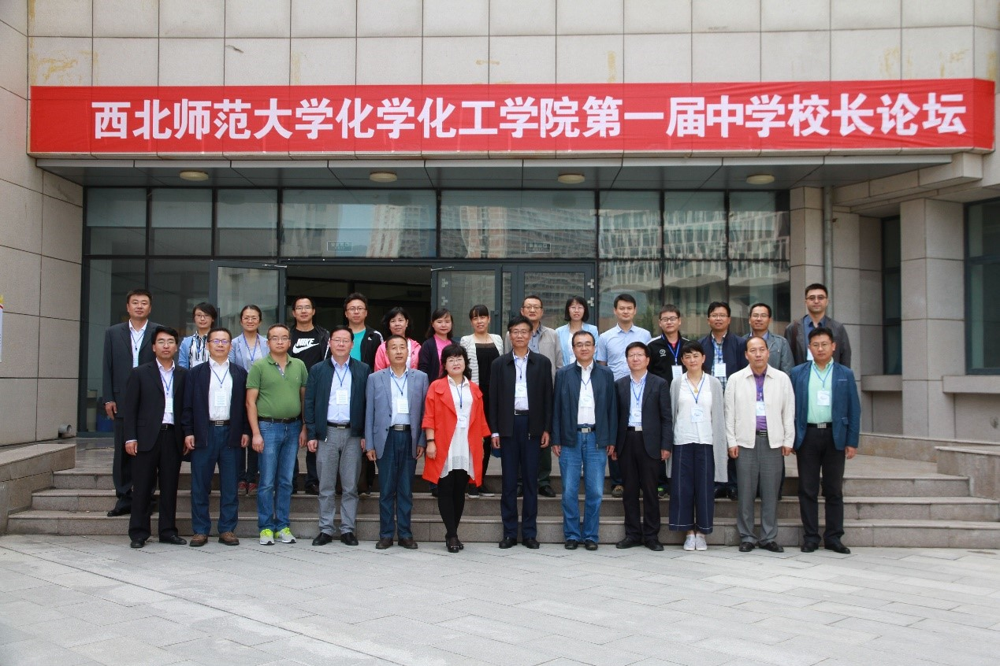
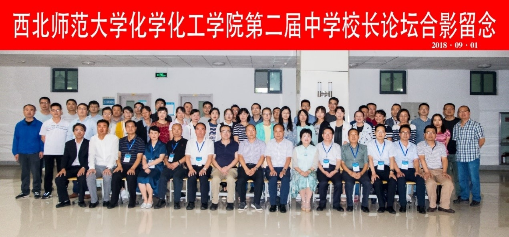

西北师范大学化学化工学院于2005年成立基础化学实验中心，下设无机化学实验室、分析化学实验室、有机化学实验室和物理化学实验室。2009年被甘肃省教育厅评为甘肃省实验教学示范中心。实验室现总面积2000余平方米，实验仪器设备500多万元，可同时容纳400人进行实验工作。承担本校化学化工学院化学、化学工程与工艺以及材料科学与工程等本科专业，生命科学学院的生物科学专业、生物技术和工程专业、科学教育专业和地理与环境科学学院的环境工程专业的实验教学任务，每年为全校700多名本科生开设各类实验教学。
与此同时，学院独立设置了中学化学教学实验室，2008年划归教育学院，由教育学院负责实验室的教学和管理工作，2017年起重新回到化学化工学院，学院负责实验室的建设、管理和教学工作。学院重新成立了中学化学教学实验中心，组建了中心机构，建成中学化学教学法基础实验室2间，中教法综合创新开放实验室1间，虚拟仿真实验室1间，中学名师工作室1间，准备室1间，总使用面积500平方米。突出我校“师范教育”的特色，密切联系中学教育教学实际，与教育机构和中学加强了联系和沟通，更新了部分设备，修订了实验教学课程体系，大大改善了化学实验教学中心的实验条件和环境。目前中心运行良好，教学质量逐年提高，成为学院学生最喜欢的实验教学体系之一。各类仪器设备400余件，价值100多万元。实验设施和环境完全达到了教育部有关规定。
1. 实验教学体系
在化学一级学科的平台上，打造更加合理的实验教学人才培养体系，优化和改进现有的“一体化、两结合、多层次、开放式”的教师教育化学实验教学体系，在本科生、研究生的培养和在职教师的培训三个维度实现一体化。
在人才培养过程中将实验教学和中学教学实际、大学教师主讲与中学名师工作室相结合，请中学名师走进课堂演示教学，学生到中学课堂观摩教学。在实验类别上将基础实验、综合性实验和研究创新型实验三个层次统筹设计，增加综合性、设计性、研究性实验，减少验证性实验。坚持每周为大三师范本科生、“本硕一体化”化学教育硕士生开放一次实验室，学生在实验室自由探索。
利用现代化的虚拟仿真技术，对部分易燃易爆、有毒有害的危险性中学化学教育类实验以及错误实验操作造成的危害等难以直接进行实验的项目研发虚拟仿真实验项目。通过人机交互、可视化模拟、通过声音、图像等生动形象的展示使学生从感观上对该部分理论和实验知识及错误实验操作造成的危害加深理解。虚拟仿真实验作为现实实验的补充，拓展针对师范生的中教法实验及实验研究课程的教学资源，为培养师范生的教学实践能力，加强学生进行实验研究和实验设计能力提供了丰富的资源。这些资源还作为化学教师远程培训和研修的课程，将对基础化学教育实验改革产生深远的影响。
在建设期内，新增虚拟仿真实验项目5项（目前已从北京师范大学化学学院通过合作共建、引进中学化学实验虚拟仿真实验项目6项：氢气的制备及性质，氯气的制备及性质，石油的催化裂解工业原理模拟，工业氨氧化法制硝酸原理模拟，化学实验中的错误操作造成的危害，化学实验室突发意外的应急处理），由教师科研成果转化而来的化学综合设计实验项目2项，鼓励学生结合中学教学实际和生活实际自拟实验题目，开展创新实验。
在此基础上，中心将聘请校内外生物、地理教师进入中心，构建化学为基础，生物、地理科学为两翼的高层次实验教学中心，为培养厚基础、高素质、综合型的教育教学人才提供支撑和保障，为下一步申报国家级实验教学示范中心打好基础。
2. 队伍建设
中心重视实验教学队伍的建设，初步形成了高水准的实验教学、专职实验技术人员和管理服务队伍，中心现有主任1名，副主任2名，共有教师18人，其中教授7人，具有博士学位的教师12人，实验室专职实验师1人。在此基础上，聘请校内外生物、地理教师6-8人进入中心，为将中心打造成科普训练、演示基地做好准备。
实验中心主任聘任各实验课的主讲教师和任课教师。主讲教师全面负责实验课的教学与管理。实验指导教师在全院教师中公开招聘，择优聘任；各项工作责任到人。实验技术人员全部实行公开招聘、竞争上岗。
3. 管理体制
中心实行院级管理，实行院教学指导委员会统一领导下的中心主任负责制和全员岗位聘任制。中心统一管理实验室专职人员和实验经费及仪器设备，实现“人、财、物”的集中管理。中心统一管理实验教学的课程和聘任实验教师。
4. 教材建设
建设期内将主编及参编实验教材、讲义、科普读物，特别是实验教材及教学参考书2-3部，建设面向中小学的科普性质的演示实验教材1-2部和专题网站。
5. 社会服务
中心将继续践行高校服务社会的功能，组织学生社团进入中小学校园开展科普宣传和实验演示互动活动；同时，组织不同层级的夏令营活动，邀请中小学生，特别是贫困地区的孩子们，进入示范中心开展实验演示、科学探究等科普活动，更好地服务社会。中心建成后将为我省及西部地区、乃至全国兄弟院提供广泛交流实验教学改革经验的平台，为一些高校提供教改经验。
 